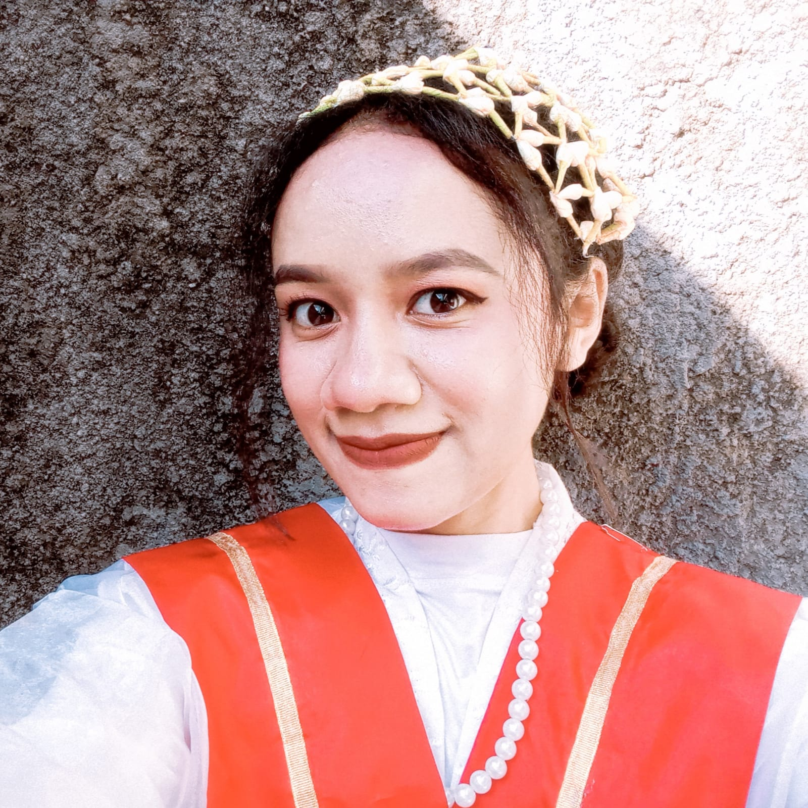
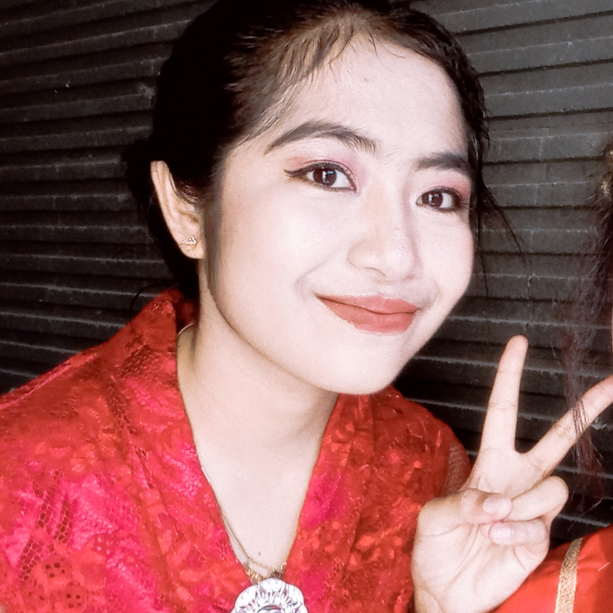

Service adalah setiap kegiatan yang diperuntukkan dan ditujukan untuk member kepuasan melalui pelayanan yang diberikan seseorang secara memuaskan.
E-Commerce
e-Commerce adalah salah satu bentuk kemajuan teknologi yang bisa kita rasakan sekarang. Grameds pasti sudah tidak asing lagi dengan keberadaan e commerce, terutama orang- orang yang suka berbelanja online di internet.
Responsive Design
Responsive web design atau desain web responsif adalah sebuah teknik atau metode bagi web designer untuk membuat suatu layout website yang dapat menyesuaikan diri sesuai dengan ukuran layar pengguna.
Web Security
Web Security adalah istilah untuk mengatasi berbagai macam serangan atau attack dalam teknologi internet atau website.
Pariwisata Nusa Tenggara Timur
Nusa Tenggara Timur memiliki banyak obyek wisata alam menakjubkan yang tidak ada ditempat lain, menjadikannya tujuan favorit wisatawan diseluruh penjuru dunia
Web Responsive ini dibuat untuk memenuhi tugas mata kuliah pemrograman web mobile dengan menggunakan bootstrap!
Be Part
Of Our
Story!
Our Team
Team dibentuk untuk memenuhi tugas pemrograman web mobile

Angelina Nope
Lead Designer

Aurea Imelda
Lead Developer
Universitas Teknologi Digital Indonesia
Contact Us
Hubungi kami jika anda ingin mengetahui lebih banyak tentang pariwista yang ada di Nusa Tenggara Timur.
Danau Kelimutu
Wisata Alam Nusa Tenggara Timur
Gunung Kelimutu adalah gunung berapi yang terletak di Pulau Flores, Provinsi Nusa Tenggara Timur. Lokasi gunung ini tepatnya di Desa Pemo, Kecamatan Kelimutu, Kabupaten Ende. Gunung ini memiliki tiga buah danau. kawah di puncaknya. Danau ini dikenal dengan nama Danau Tiga Warna karena memiliki tiga warna yang berbeda, yaitu merah, biru, dan putih. Walaupun begitu, warna-warna tersebut selalu berubah-ubah seiring dengan perjalanan waktu.
Kelimutu merupakan gabungan kata dari "keli" yang berarti gunung dan kata "mutu" yang berarti mendidih. Menurut kepercayaan penduduk setempat, warna-warna pada danau Kelimutu memiliki arti masing-masing dan memiliki kekuatan alam yang sangat dahsyat.
Danau atau Tiwu Kelimutu di bagi atas tiga bagian yang sesuai dengan warna - warna yang ada di dalam danau. Danau berwarna biru atau "Tiwu Nuwa Muri Koo Fai" merupakan tempat berkumpulnya jiwa-jiwa muda-mudi yang telah meninggal. Danau yang berwarna merah atau "Tiwu Ata Polo" merupakan tempat berkumpulnya jiwa-jiwa orang yang telah meninggal dan selama ia hidup selalu melakukan kejahatan/tenung. Sedangkan danau berwarna putih atau "Tiwu Ata Mbupu" merupakan tempat berkumpulnya jiwa-jiwa orang tua yang telah meninggal.
Para penduduk di sekitar Danau Kelimutu percaya, bahwa pada saat danau berubah warna, mereka harus memberikan sesajen bagi arwah orang - orang yang telah meninggal.
Luas ketiga danau itu sekitar 1.051.000 meter persegi dengan volume air 1.292 juta meter kubik. Batas antar danau adalah dinding batu sempit yang mudah longsor. Dinding ini sangat terjal dengan sudut kemiringan 70 derajat. Ketinggian dinding danau berkisar antara 50 sampai 150 meter.
Client:
Threads
Category:
Illustration
Pulau Kanawa
Wisata Alam Nusa Tenggara Timur
Pulau Kanawa adalah obyek wisata alam dengan kondisi lingkungan asri dan terjaga. Kawasan perairannya memiliki air laut yang jernih, serta satwa laut beragam dan aneka warna.
Obyek wisata alam Pulau Kanawa berada dekat dengan Labuan Bajo, sehingga juga dekat dengan beberapa obyek lain, seperti Pantai Sembilan dan Taka Makassar. Banyak wisatawan lokal maupun asing yang berkunjung ke pulau cantik ini.
Dari Labuan Bajo, Nusa Tenggara Timur, Pulau Kanawa berjarak sekitar 15 km. Biasanya penyedia paket wisata menjadikannya dalam satu paket. Disini kalian bisa berlibur, berpetualang dan melakukan berbagai kegiatan seru.
Contohnya adalah aktivitas saat air laut surut, maka kita bisa melihat berbagai biota laut muncul. Misalnya bintang laut, kelomang, kepiting dan sebagainya terjebak di tepi pantai.
Bagi yang ingin menikmati perairannya yang mempesona, kita bisa mencoba diving dan snorkeling. Dengan begitu kita bisa melihat aneka warna terumbu karang dan ikan-ikan yang menghuni lautan sekitar. Bahkan kita juga bisa bertemu dengan Kuda Laut, Mola-Mola, Hiu Paus, Parrot Fish, dan Manta Ray.
Di kawasan wisata Pulau Kanawa tersedia fasilitas bungalow yang bisa kita manfaatkan untuk beristirahat. Penginapan ini terhubung dengan dermaga kayu yang juga berfungsi sebagai tempat berlabuhnya perahu. Selain itu kita juga bisa bersantai di hammock yang telah dipasang di bawah pepohonan rindang.
Tidak jauh dari pantai ada pula bukit yang tak terlalu tinggi. Bukit ini berada di tengah pulau yang dihuni berbagai spesies burung cantik. Rerumputan setinggi 15 cm adalah vegetasi dominan di bukit ini. Puncak bukit juga menjadi lokasi favorit para wisatawan untuk menikmati sunset, sunrise serta memandang cahaya bintang di gelap malam.
Client:
Explore
Category:
Graphic Design
Pantai Kolbano
Wisata Alam Nusa Tenggara Timur
Pulau Komodo adalah sebuah pulau yang terletak di Kepulauan Nusa Tenggara, berada di sebelah timur Pulau Sumbawa, yang dipisahkan oleh Selat Sape. Pulau Komodo dikenal sebagai habitat asli hewan komodo.
Pulau ini termasuk salah satu kawasan Taman Nasional Komodo yang dikelola oleh Pemerintah Pusat.
ecara administratif, pulau ini termasuk wilayah Kabupaten Manggarai Barat, Kecamatan Komodo, Provinsi Nusa Tenggara Timur, Indonesia. Pulau Komodo merupakan ujung paling barat Provinsi Nusa Tenggara Timur, berbatasan dengan Provinsi Nusa Tenggara Barat.
Di Pulau Komodo, hewan komodo hidup dan berkembang biak dengan baik. Hingga Agustus 2009, di pulau ini terdapat sekitar 1300 ekor komodo. Ditambah dengan pulau lain, seperti Pulau Rinca dan dan Gili Motang, jumlah mereka keseluruhan mencapai sekitar 2500 ekor. Ada pula sekitar 100 ekor komodo di Cagar Alam Wae Wuul di daratan Pulau Flores tapi tidak termasuk wilayah Taman Nasional Komodo.
Selain komodo, pulau ini juga menyimpan eksotisme flora yang beragam kayu sepang yang oleh warga sekitar digunakan sebagi obat dan bahan pewarna pakaian, pohon nitak ini atau sterculia oblongata di yakini berguna sebagai obat dan bijinya gurih dan enak seperti kacang polong.
Pulau Komodo juga diterima sebagai Situs Warisan Dunia UNESCO, karena dalam wilayah Taman Nasional Komodo, bersama dengan Pulau Rinca, Pulau Padar dan Gili Motang
Client:
Finish
Category:
Identity
Pulau Komodo
Wisata Alam Nusa Tenggara Timur
Pulau Komodo adalah sebuah pulau yang terletak di Kepulauan Nusa Tenggara, berada di sebelah timur Pulau Sumbawa, yang dipisahkan oleh Selat Sape. Pulau Komodo dikenal sebagai habitat asli hewan komodo.
Pulau ini termasuk salah satu kawasan Taman Nasional Komodo yang dikelola oleh Pemerintah Pusat.
ecara administratif, pulau ini termasuk wilayah Kabupaten Manggarai Barat, Kecamatan Komodo, Provinsi Nusa Tenggara Timur, Indonesia. Pulau Komodo merupakan ujung paling barat Provinsi Nusa Tenggara Timur, berbatasan dengan Provinsi Nusa Tenggara Barat.
Di Pulau Komodo, hewan komodo hidup dan berkembang biak dengan baik. Hingga Agustus 2009, di pulau ini terdapat sekitar 1300 ekor komodo. Ditambah dengan pulau lain, seperti Pulau Rinca dan dan Gili Motang, jumlah mereka keseluruhan mencapai sekitar 2500 ekor. Ada pula sekitar 100 ekor komodo di Cagar Alam Wae Wuul di daratan Pulau Flores tapi tidak termasuk wilayah Taman Nasional Komodo.
Selain komodo, pulau ini juga menyimpan eksotisme flora yang beragam kayu sepang yang oleh warga sekitar digunakan sebagi obat dan bahan pewarna pakaian, pohon nitak ini atau sterculia oblongata di yakini berguna sebagai obat dan bijinya gurih dan enak seperti kacang polong.
Pulau Komodo juga diterima sebagai Situs Warisan Dunia UNESCO, karena dalam wilayah Taman Nasional Komodo, bersama dengan Pulau Rinca, Pulau Padar dan Gili Motang
Client:
Lines
Category:
Branding
Pantai Lasian
Wisata Alam Nusa Tenggara Timur
Dikenal sebagai kota yang panas dan kering, Kupang ternyata memiliki beberapa jajaran pantai yang dapat dijadikan alternatif wisata karena letaknya yang berada dekat dengan pusat kota. Salah satunya adalah Pantai Lasiana yang mulai dibuka sebagai obyek wisata untuk umum pada tahu 1970-an. Pantai landai dengan luas 3,5 hektar ini dihiasi oleh sekitar 65 pohon kelapa dan 230 pohon lontar yang berjajar di sepanjang hamparan pasir putih pantai ini. Ditambah dengan gulungan ombaknya yang tidak terlalu besar, menjadikan suasana di sekitar pantai terasa sejuk dan asri. Perpaduan pasir putih dan birunya laut pun makin menambah keelokan Pantai Lasiana.
Pantai Lasiana yang berlokasi di Kelurahan Lasiana, Kecamatan Kupang Tengah, Kupang, NTT ini berjarak sekitar 12 km ke arah timur dari pusat Kota Kupang. Di pantai yang menjadi alternatif wisata andalan masyarakat Kupang ini, pengunjung dapat melakukan beragam aktivitas, seperti berenang, memancing, bermain sepak bola, karaoke atau sekedar bermain air di pantainya.
Makin ke sini, semakin banyak wisatawan baik dari dalam maupun luar kota Kupang yang mengunjungi pantai ini.
Berjarak hanya sekitar 12 km dari Kupang, akses menuju lokasi pantai ini sangatlah mudah dan bervariatif. Waktu tempuh dari Kupang ke Pantai Lasiana memakan waktu sekitar 15 menit dengan kondisi jalan yang sudah beraspal halus. Pengunjung dapat menggunakan angkutan umum atau kendaraan pribadi. Dengan letaknya yang berada di jalur transportasi utama Pulau Timor, menjadikan lokasinya senantiasa dilewati oleh angkutan umum dan ojek.
Pantai Lasiana sudah dilengkapi oleh beberapa fasilitas penunjang untuk para pengunjungnya. Di pantai ini terdapat perkiosan, MCK, kafe, warung makan, kolam renang, panggung hiburan rakyat, arena bermain anak dan juga homestay. Warung-warung kecil yang berjajar di sekitar area parkir pantai menyediakan minuman dan juga makanan ringan. Selain itu juga menjajakan es kelapa muda, jagung bakar dan pisang epe bakar yang sangat nikmat apabila disantap sambil menikmati keindahan Pantai Lasiana. Biasanya para pedagang ini akan ramai berjualan mulai hari Sabtu sore, Minggu dan hari libur lainnya. Tak hanya kios dagang saja, di sekitar kawasan pantai juga terdapat kafe dan homestay, bagi para pengunjung yang hendak menikmati pantai dengan suasana yang berbeda.
Client:
Southwest
Category:
Website Design
Desa Megalitik
Wisata Alam Nusa Tenggara Timur
Kampung Bena adalah salah satu perkampungan megalitikum yang terletak di Kabupaten Ngada, Nusa Tenggara Timur. Tepatnya di Desa Tiwuriwu, Kecamatan Aimere, sekitar 19 km selatan Bajawa. Kampung yang terletak di puncak bukit dengan view gunung Inerie. Keberadaannya di bawah gunung merupakan ciri khas masyarakat lama pemuja gunung sebagai tempat para dewa. Menurut penduduk kampung ini, mereka meyakini keberadaan Yeta, dewa yang bersinggasana di gunung ini yang melindungi kampung mereka.
Kampung ini saat ini terdiri kurang lebih 40 buah rumah yang saling mengelilingi. Badan kampung tumbuh memanjang, dari utara ke selatan. Pintu masuk kampung hanya dari utara. Sementara ujung lainnya di bagian selatan sudah merupakan puncak sekaligus tepi tebing terjal.
Kampung ini sudah masuk dalam daerah tujuan wisata Kabupaten Ngada. Ternyata kampung ini menjadi langganan tetap wisatawan dari Jerman dan Italia.
Ditengah-tengah kampung atau lapangan terdapat beberapa bangunan yang mereka menyebutnya bhaga dan ngadhu. Bangunan bhaga bentuknya mirip pondok kecil (tanpa penghuni). Sementara ngadhu berupa bangunan bertiang tunggal dan beratap serat ijuk hingga bentuknya mirip pondok peneduh. Tiang ngadhu biasa dari jenis kayu khusus dan keras karena sekaligus berfungsi sebagai tiang gantungan hewan kurban ketika pesta adat.